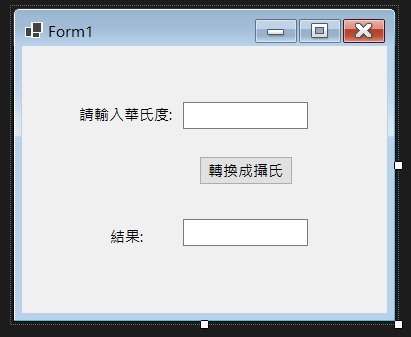
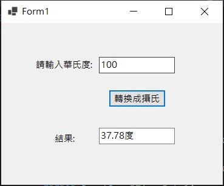
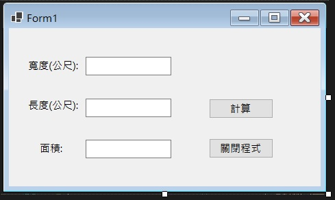
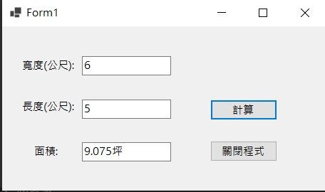
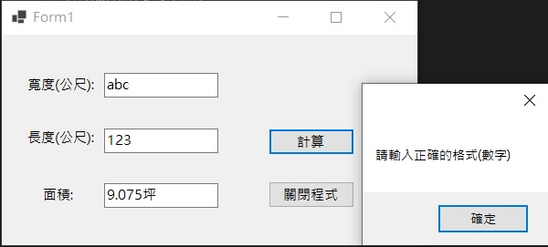

介面設計與實作
介面設計與實作
本章節會展示簡單的程式，並且與前面兩章介紹到的功能做一個結合
1.華氏轉攝氏度
介面設計：2個Label、2個textBox、1個Button。接著對Button雙擊左鍵，進入程式碼頁面
完整程式碼：
輸出結果：
2.坪數計算
3個Label、3個textBox、2個Button
完整程式碼：
輸出結果：
由於這一段有寫 try...catch，所以如果輸入錯誤，會跳出訊息視窗
什麼是try...catch?
舉例來講，如果使用者輸入意料之外的資料(例如限定輸入數字字串的地方，輸入了英文)，就會執行catch的區塊。 如果沒有try...catch程式則會直接當掉，不會做任何處理